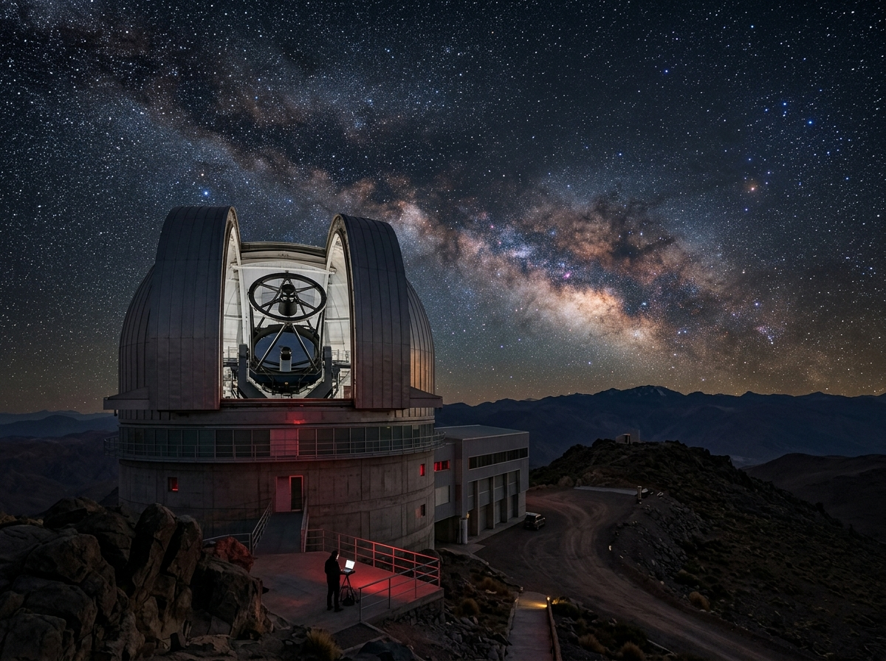
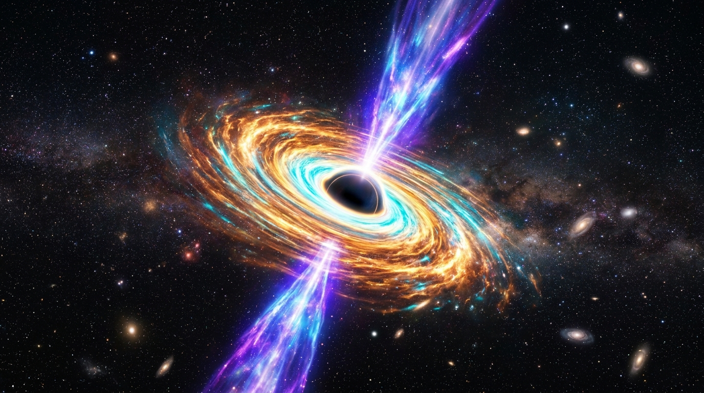
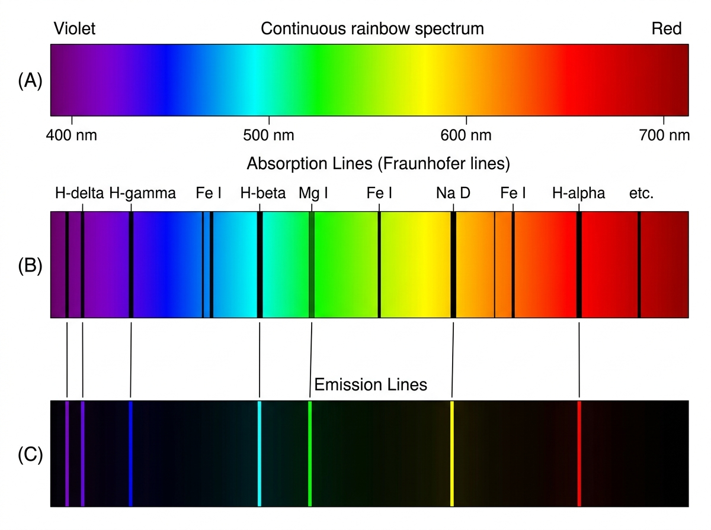

Complétez les composants de formulaires demandés dans chaque question.
Voici le télescope spatial en charge du relevé astronomique.

Station active (lecture seule) :
Code d'accès de l'observateur * :
Indiquer l'heure exacte (UTC) du début de l'observation :
Heure de début (UTC) * :
Le décalage vers le rouge z mesure la vitesse d'éloignement et la distance du quasar.

Ajuster la valeur du redshift z (entre 0 et 8) :
Observer le spectre ci-dessous et sélectionner la couleur de la raie d'émission H-alpha :

Couleur de la raie :
Sélectionner les bandes de rayonnement étudiées (maintenir Ctrl pour plusieurs choix) :
Joindre le fichier du spectre (.png, .jpg ou .fits) :
Soumettre Effacer